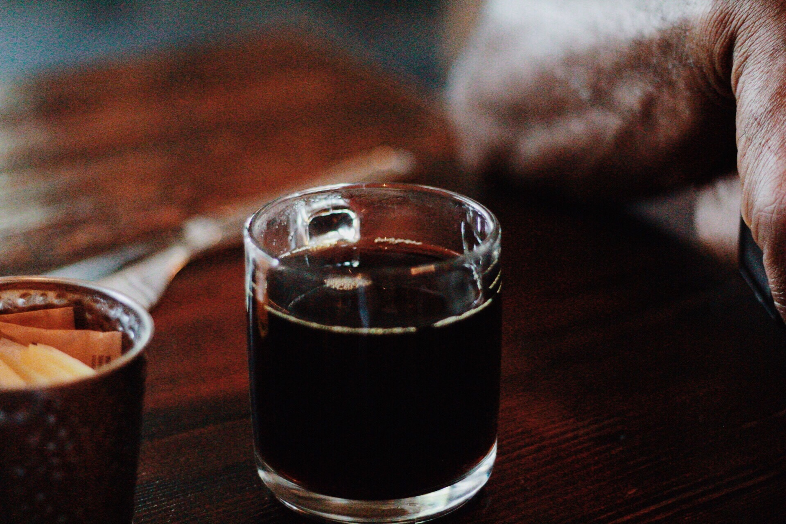
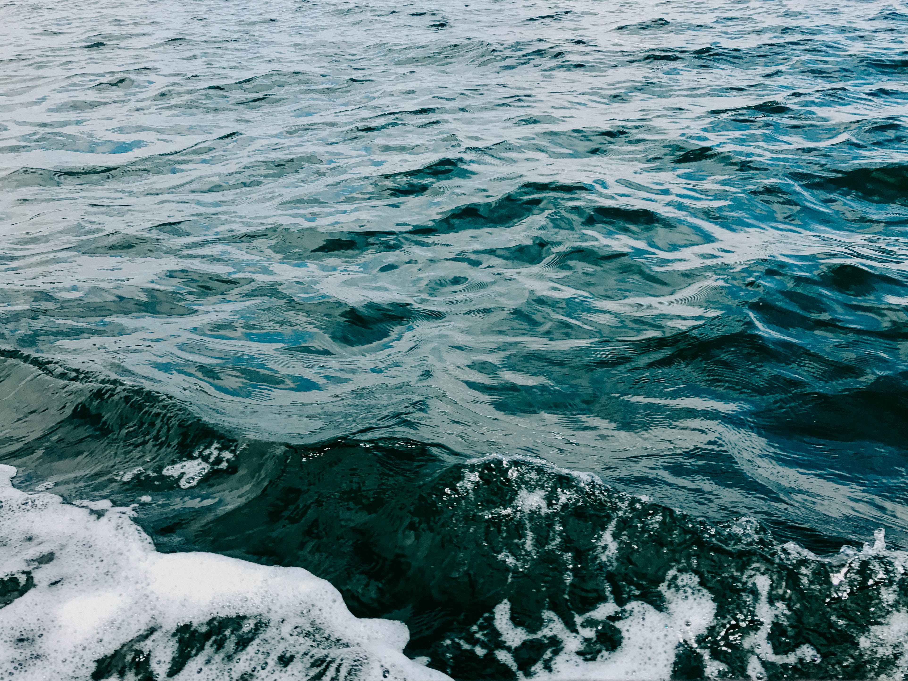
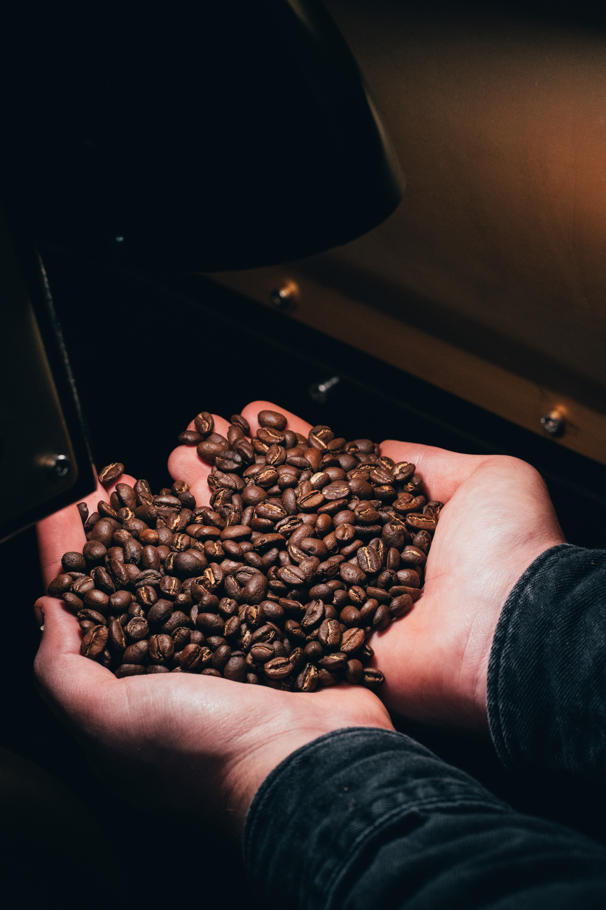

Selection
Have you heard of the Boston Tea Party?

The mixture of tea with ocean water could tell tales
Our Selection is no different. We scavenge beans from all over the world that add only the best flavor and hints of adventure on your lips

Roasting
We first soak all our coffee beans in a salt-brine solution made from the sea, then roast the bins over a fire lit from driftwood. We finish off by grinding the beans using a sea-barnicle grinder


We have found that roasting for no less than 24 hours over open flame does more than just make the beans sizzle your tastebuds

Our roasting process is magical and imbues very special qualities to our beans. Maybe it is because they have been kissed by fairies. We can't say

You must try it to believe us